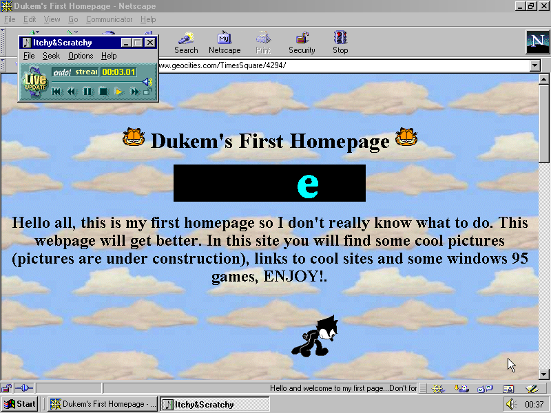
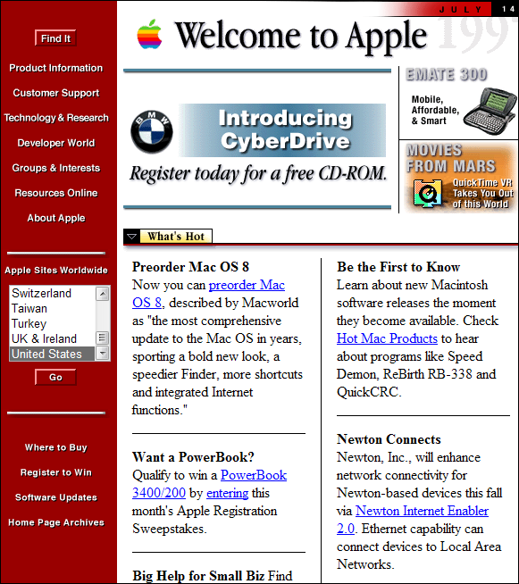
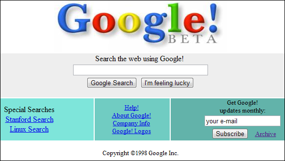
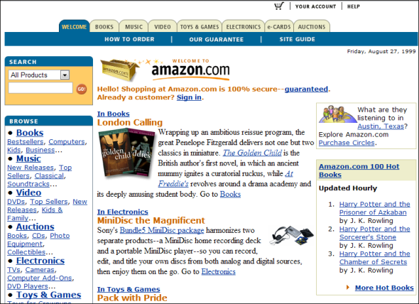

Ewoluca animacji webowych
Maciej Kienig
Front-end developer w firmie Softwarehut. Z wykształcenia architekt, interesuje się grafiką, designem i animacjami
Wczesne lata
- 1989 powstaje World Wide Web

Tim Berners-Lee

Wczesne lata
- 1989 powstaje World Wide Web
- 1992 pierwsze opublikowane zdjęcie


Wczesne lata
- 1989 powstaje World Wide Web
- 1992 pierwsze opublikowane zdjęcie
- 1992 - 1994 Standard HTML 2, więcej obrazków i gifów

W3C
W 1994 Berners zakłada W3C (World Wide Web Consorcium) które zajmuje się rozwojem standardów www.
- HTML/XHTML/XFORMS - podstawowe języki znaczników do tworzenia stron
- CSS
- DOM – jednolity system wyświetlania i indeksowania elementów stron WWW przez przeglądarki
- HTTP - protokół przesyłania stron WWW
- SVG
1995 - 96
- 1995 – PHP, JavaScript, Ruby
- 1996 – CSS
- 1996 – Macromedia Flash
Apple 1997
Yahoo! 1997
Microsoft 1997
Google 1998
Amazon 1999
Macromedia Flash
- Jedno narzędzie
- Flash 5 – wprowadzenie ActionScript - interakcje
- 2007 – iPhone oraz początek upadku Flash
- 2011 – Adobe zaprzestaje rozwijać Flash dla urządzeń przenośnych
Przykład strony napisanej we flashu
HTML, CSS i JavaScript
- Brak kompatybilności między przeglądarkami
-
2006 – John Resig wypuszcza jQuery
- odseparowanie kodu JavaScript od HTML
- przejrzystość kodu
- wsparcie wszystkich przeglądarek
- 2008 - prace nad HTML 5
- Obsługa plików wideo, audio oraz canvas
- CSS 3 transitions, transform i keyframes
Javascript
var box = document.querySelector('#box1');
box.addEventListener('mouseover', function(){
var x = 0;
for (var i = 0; i<=500; i++){
x = i;
this.style.left = x + 'px';
}
})
jQuery
$('#box2').mouseover(function(){
$(this).animate({left: '500px'}, 1000)
})
CSS keyframes
.box3{
background: #E25121;
animation: animate 1s infinite alternate;
}
@keyframes animate {
from {left: 0px}
to {left: 500px}
}
Tytuł strony
I'll fade in, then outasdasdakdjalkdasdlksadad
vjskjshdfkshdfksdfhksdf